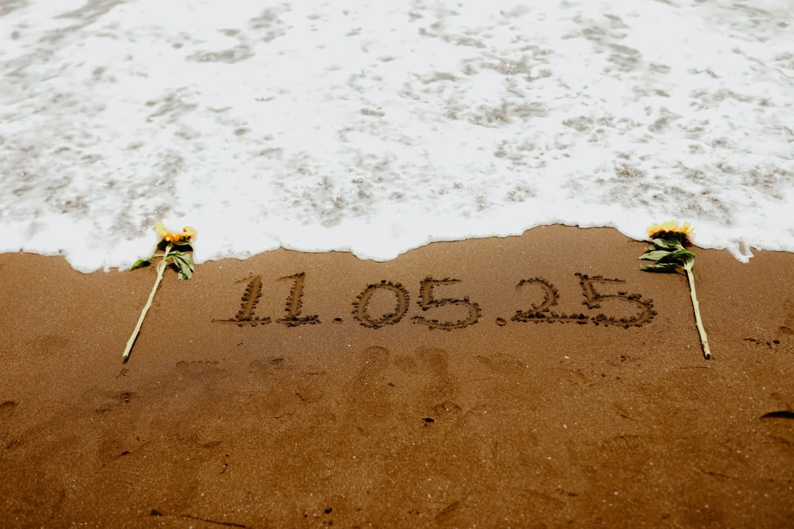
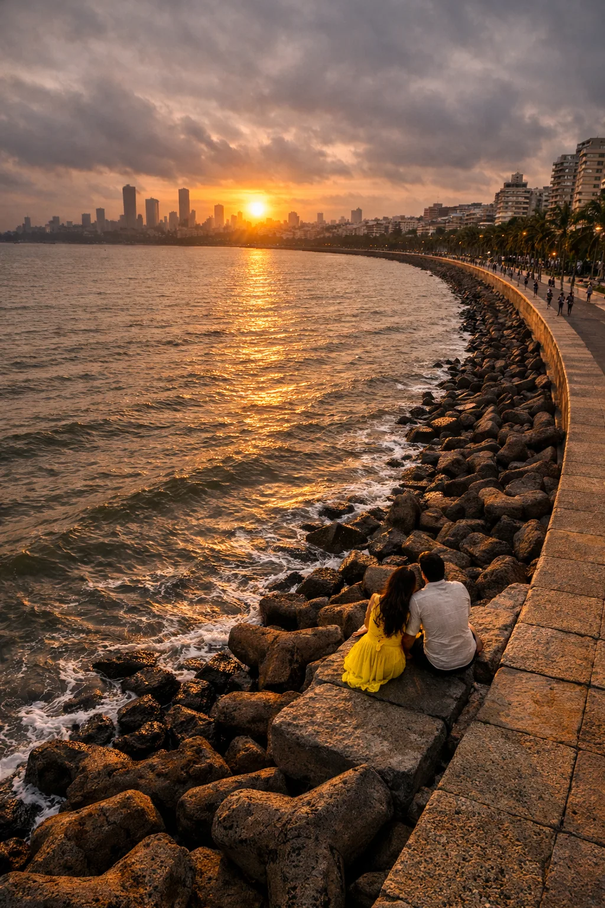

Best Pre-Wedding Shoot Locations in Mumbai (and Near Mumbai): A Photographer's Guide
Looking for pre-wedding shoot locations in Mumbai? Best spots, ideal timings, permission tips and ideas by Sandip Lade of The Unposed Story.

Pre wedding shoot locations in mumbai
The best pre-wedding shoot locations in Mumbai are Marine Drive, Bandra Bandstand, Worli Sea Face, Juhu Beach, the Fort and Colaba heritage area, and Bandra Fort. For more space and greenery, couples often go just outside the city to Lonavala, Karnala or Alibaug. The right choice depends on your style, your season and how much time you have.
This guide explains what each location is good for, when to go, and what to check before booking.
How to choose a pre-wedding location
- Style first. Do you want a city look, a beach, heritage architecture or greenery?
- Season. Monsoon makes hills green but unpredictable. Winter is the easiest for comfortable shoots.
- Time of day. Early morning and the hour before sunset give soft light and fewer crowds.
- Crowds and permissions. Popular spots get busy, and some places require permission for professional shoots.
- Travel time. A shoot that needs two hours of travel each way needs a full-day plan.

Pre wedding shoot locations in mumbai
Locations in Mumbai
1. Marine Drive
A classic for the city skyline and the curve of the coast. Best around sunrise or at dusk, when the lights come on. It's also very public, so expect people around you.
2. Bandra Bandstand and Bandra Fort
Sea views, rocks and a relaxed mood. Good for casual, candid couple portraits. The fort adds stone walls and open views. Go early to avoid the evening crowd.
3. Worli Sea Face
Open sea, the sea link in the distance and wide frames. It works well for walking shots and sunset silhouettes.
4. Juhu Beach
Sand, water and movement, with a lively atmosphere. Early morning gives you the cleanest frames. Check the weather and the tide before you go.
5. Fort, Kala Ghoda and Colaba
Heritage buildings, arches and old streets give an elegant, traditional look, especially for couples who want a vintage or classic style. Check the rules for professional shoots at specific monuments.
6. Gateway of India area
Iconic and recognisable, but very crowded. If you want it, shoot at dawn.
7. Mahim Fort and Worli Fort
Less crowded than the main tourist spots, with sea views and old stone walls. [Add which ones you've shot at, and only keep the ones you have.]
Locations near Mumbai (day trips)
8. Lonavala and Khandala
Hills, mist and greenery, especially in and after the monsoon. Good for a romantic, cinematic look. Plan for a full day and for changing weather.
9. Karnala
Hill fort and forest scenery, for couples who want an adventurous, natural look. [Add details of access and the best season from your experience.]
10. Alibaug
Beaches and a quieter coastal feel, away from city crowds. Good for a relaxed, travel-style shoot.
Pre-wedding shoot ideas by style
If you want...Consider...Classic and elegantFort and Kala Ghoda, Marine Drive at duskRomantic and softBandstand, Worli Sea Face at sunsetPlayful and candidJuhu Beach, Bandra FortCinematic and scenicLonavala, KarnalaTraditional Maharashtrian lookHeritage areas with Paithani and nath styling [add what you've actually shot]
Best time for a pre-wedding shoot in Mumbai
- Best light: shortly after sunrise, or in the last hour before sunset.
- Best season for comfort: roughly November to February.
- Monsoon: gives dramatic, green scenery near the hills, but be ready to reschedule.
- Summer: possible, but shoot early morning or evening to avoid the heat.
Permissions and practical tips
Rules for professional shoots change, and they differ by location. Before you finalise a place:
- Ask your photographer whether permission is needed and who arranges it.
- Check current rules and timings for forts, parks and monuments.
- Keep a backup location in case of rain or crowds.
- Carry water, comfortable footwear and a spare outfit.
[Add what you actually handle for couples, such as permissions, outfit planning or location scouting.]
What should we wear?
Pick colours that stand out against the location. For example, pastel or earth tones suit a beach, and richer colours stand out against old stone. Avoid outfits that restrict movement. If you plan a traditional look, bring your jewellery and accessories and tell your photographer in advance.
How much does a pre-wedding shoot cost in Mumbai?
Prices depend on the number of hours, locations, outfit changes and whether a film is included. [Add your real starting price and what's included, or link to your pricing page.]
How to prepare
- Share your style references with your photographer.
- Choose one or two locations, not five. Rushing ruins the mood.
- Plan your outfit changes in advance.
- Rest and eat well beforehand.
- Relax. The best photos come from comfortable couples.
Planning your pre-wedding shoot?
At The Unposed Story, we shoot candid, natural pre-wedding stories in Mumbai and beyond. We'll help you choose a location that suits your style and season.
👉 See our work and check your date
📞 WhatsApp: [+917045278377]
📸 Instagram: [https://www.instagram.com/theunposedstory]
About the author: Sandip Lade is the lead photographer and founder of The Unposed Story, a candid wedding photography and films studio in Mumbai. [Add true details about your experience.]
Frequently asked questions
1. How much does a wedding photographer cost in Mumbai?
Wedding photography in Mumbai typically costs 20,000 to 30,000 , depending on the number of events, the team size and what's included. At The Unposed Story, candid wedding photography starts from ₹35,000 with our Essential package. Message us your date and venue for a personalised quote.
2. What is the difference between candid and traditional wedding photography?
Traditional photography focuses on posed portraits and family groups. Candid photography captures natural moments, such as reactions, emotions and small interactions, as they happen. At The Unposed Story, we shoot candid moments throughout your wedding and also cover the essential family and ritual photographs.
3. How many photos will we receive, and how long does delivery take?
For a full-day wedding, couples commonly receive [1 to3 ] edited photographs. We deliver a sneak peek within [4 days] and the full gallery within [1 weeks].
How early should we book a wedding photographer in Mumbai?
For peak season dates, we suggest booking 3 months ahead. If your date is closer, send us a message. We'll tell you honestly whether we're available.
5. Do you photograph Marathi and Maharashtrian weddings, and which areas do you cover?
Yes. We shoot weddings in [Mumbai, Thane, Navi Mumbai, Pune] and destinations across India. For other locations, contact us and we'll confirm travel details.